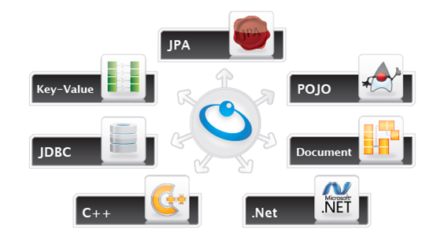

|
Section Summary: This section will teach you how to design your data for distributing on the data grid and about the various APIs for accessing you data. overviewMoving your application to a distributed environment holds significant benefits such as linear scalability, excellent performance and increased reliability. However, it requires a different design for you data model. Look at the Modeling your data page for key insights. XAP 8.0 promotes openness and interoperability, supporting common interfaces for accessing data, such as JPA, Document, SQL, JDBC, Memcached and a native POJO based API. You can choose the best API for the case at hand, and be able to operate on the same data regardless of the APIs you have chosen. Look at the different API pages to learn about each and every use case for data accessing on XAP. 
Supported APIs |
| GigaSpaces.com - Legal Notice - 3rd Party Licenses - Site Map - API Docs - Forum - Downloads - Blog - White Papers - Contact Tech Writing - Gen. by Atlassian Confluence |